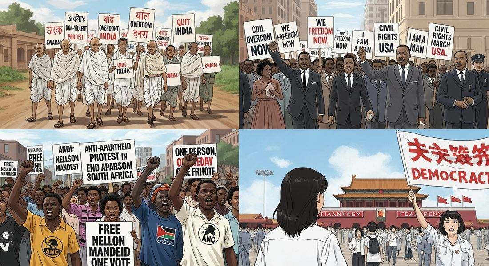
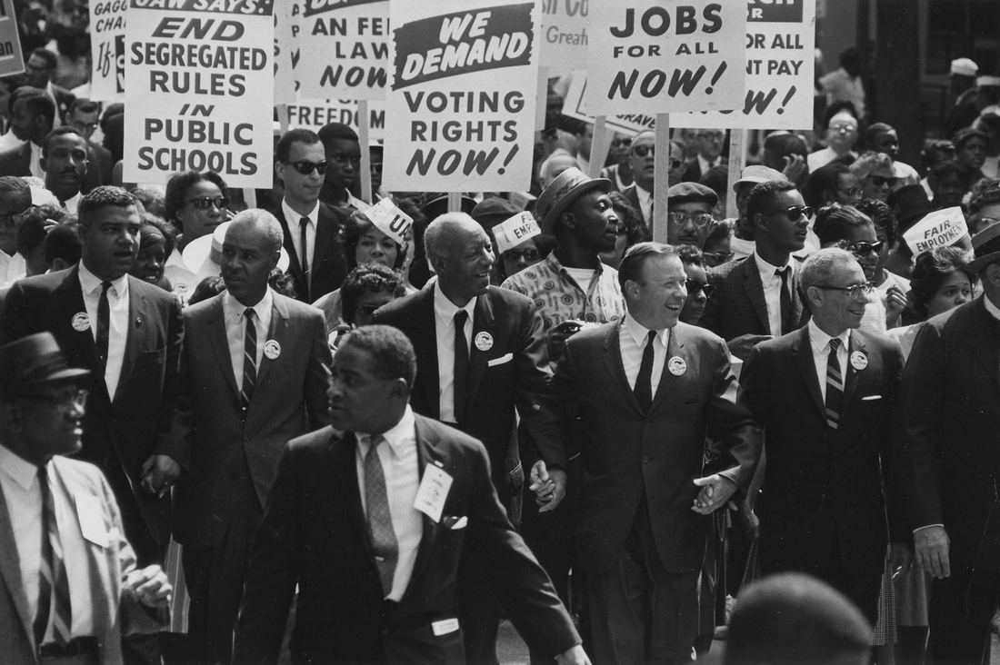

8.7 Global Resistance to Established Power Structures After 1900
- LO-A: Two contradictory forces: resistance AND intensification of conflict — The CED presents Topic 8.7 as showing that the 20th century had both people who challenged conflict (Gandhi, MLK, Mandela) AND people/systems that intensified it (Pinochet, Franco, Idi Amin, Al-Qaeda). Both patterns are required content. Nonviolent resistance is a major CED theme — Gandhi (India), Martin Luther King Jr. (US civil rights), and Nelson Mandela (South Africa) all promoted nonviolence as a way to achieve political change. Know all three — what they fought for, how, and what results they achieved. Militarized states intensified conflict — Chile under Pinochet, Spain under Franco, Uganda under Idi Amin, and the global military-industrial complex all exemplify how states responded to challenges by intensifying violence rather than reform. These are all CED illustrative examples. Terrorist movements used violence against civilians — Shining Path (Peru) and Al-Qaeda are CED examples of movements that used violence against civilians to achieve political aims. These represent a distinct category from state violence.
Try each question before revealing the answer.
1. Why did Gandhi, Martin Luther King Jr., and Nelson Mandela all choose nonviolent resistance rather than armed struggle? Was it purely moral, or were there strategic calculations involved?
2. How were Pinochet (Chile), Franco (Spain), and Idi Amin (Uganda) examples of "responses that intensified conflict"? What do they have in common?
3. Why does the CED include Al-Qaeda and Shining Path as examples of movements that "used violence against civilians to achieve political aims"? What distinguishes them from other forms of resistance?
- Explain various reactions to existing power structures after 1900 — those that challenged and promoted alternatives and those that intensified conflict through state violence or civilian-targeting terrorism. Illustrative Examples: Nonviolent — Gandhi, Martin Luther King Jr., Nelson Mandela. State intensification — Pinochet (Chile), Franco (Spain), Idi Amin (Uganda), military-industrial complex. Violent movements — Shining Path, Al-Qaeda.
Tap a term for its definition.
-
Definition: Gandhi's philosophy of non-violent resistance — "truth-force" or "soul-force" — used as a political weapon against colonial rule. Significance: Demonstrated that non-violent mass civil disobedience could be more powerful than armed resistance; influenced civil rights movements worldwide.
-
Definition: American civil rights leader who applied Gandhi's non-violent methods to the struggle for African American equality, leading the Montgomery Bus Boycott (1955–56), March on Washington (1963), and many other campaigns. Significance: CED required example; demonstrated that nonviolent resistance could achieve major legal and social change within a democracy through moral force and mass mobilization.
-
Definition: South African anti-apartheid activist who spent 27 years in prison (1964–1990) before becoming South Africa's first Black president (1994) and championing reconciliation over revenge. Significance: CED required example; his eventual embrace of non-violence and reconciliation after emerging from prison became a global model for peaceful political transition.
-
Definition: Chilean general who led a US-backed military coup overthrowing democratically elected President Salvador Allende in 1973; ruled as military dictator until 1990. Significance: CED illustrative example of response intensifying conflict; his regime "disappeared" approximately 3,000 people and tortured tens of thousands while implementing neoliberal economic policies.
-
Definition: Spanish military general who led the Nationalist forces in the Spanish Civil War (1936–39) and ruled as authoritarian dictator until 1975. Significance: CED illustrative example; his victory in the Civil War was made possible by Nazi German and Italian fascist military support; his 36-year dictatorship suppressed leftist opposition through mass violence and imprisonment.
-
Definition: Ugandan military officer who seized power in a coup (1971) and ruled as a brutal dictator until 1979, killing an estimated 100,000–500,000 people through ethnic persecution and political violence. Significance: CED illustrative example of state violence intensifying conflict; his regime expelled Uganda's Asian community, destroyed the economy, and became internationally synonymous with African authoritarian brutality.
-
Definition: Maoist communist insurgent group in Peru (founded 1970, active 1980–present) that used terrorism — bombings, assassinations, massacres — against the Peruvian state and civilian population. Significance: CED illustrative example of movements using violence against civilians; killed approximately 30,000 people (majority civilians) during its peak conflict years in the 1980s–90s.
-
Definition: Transnational jihadist organization founded by Osama bin Laden in the late 1980s; responsible for the September 11, 2001 attacks in the United States. Significance: CED illustrative example of movements using violence against civilians; the 9/11 attacks killed approximately 3,000 people and triggered the US "War on Terror," reshaping global politics in the early 21st century.
☮️ The Power of Nonviolence: Gandhi, MLK, Mandela — KC-6.2.V.A
The AP CED states that "groups and individuals challenged the many wars of the century, and some, such as Mohandas Gandhi, Martin Luther King Jr., and Nelson Mandela, promoted the practice of nonviolence as a way to bring about political change." All three are required examples — know their contexts, methods, and achievements.
Mohandas Gandhi (1869–1948): Gandhi developed the philosophy of satyagraha ("truth-force") through his early work in South Africa (1893–1914) before returning to India to lead the independence movement. His methods included: mass civil disobedience (refusing to follow unjust laws), economic boycotts (of British goods), hunger strikes, and massive peaceful marches — most famously the Salt March (1930), in which he led 240 miles on foot to the sea to make salt illegally, defying the British salt tax. Gandhi's genius was to make British repression of peaceful protesters politically costly at home and internationally — British police beating women and children on the Salt March horrified world opinion. Gandhi was assassinated in January 1948, just months after Indian independence. His methods became the global template for nonviolent resistance.
Martin Luther King Jr. (1929–1968): King applied Gandhi's methods to the African American civil rights movement in the American South. His campaigns — the Montgomery Bus Boycott (1955–56), Birmingham Campaign (1963), March on Washington (1963, "I Have a Dream" speech), Selma to Montgomery marches (1965) — used nonviolent mass action to expose the brutality of racial segregation. When Birmingham police used fire hoses and attack dogs against peaceful protesters, the images broadcast nationwide and internationally accelerated federal civil rights legislation. King understood that nonviolence served a dual purpose: it demonstrated the moral superiority of the civil rights movement AND it exposed the moral bankruptcy of segregation's defenders. He was assassinated in Memphis in April 1968.
Nelson Mandela (1918–2013): Mandela's path to nonviolence was more complex. He initially organized non-violent resistance through the African National Congress (ANC) against South Africa's apartheid system — a system of legalized racial segregation that classified and controlled Black South Africans from birth. After the Sharpeville Massacre (1960), in which South African police killed 69 peaceful protesters, Mandela helped found the ANC's armed wing. He was imprisoned in 1964 and sentenced to life on Robben Island. After 27 years in prison, he was released in 1990 and became the face of peaceful transition — negotiating with the apartheid government rather than pursuing violent revolution, becoming South Africa's first Black president in 1994 in a peaceful election. His emphasis on truth, reconciliation, and building a "Rainbow Nation" rather than pursuing revenge became a global model.

Image credit not specified.
AI-generated illustration (Google Gemini, 2025), commercially licensed.

Image credit not specified.
Leaders of the March on Washington march toward the Lincoln Memorial, August 28, 1963 — the day of Dr. King's "I Have a Dream" speech. Photo: Rowland Scherman, US Information Agency. Public domain, Wikimedia Commons.
🏛️ Responses That Intensified Conflict — KC-6.2.V.C
The CED identifies a contrasting pattern: "Militaries and militarized states often responded to the proliferation of conflicts in ways that further intensified conflict." Four required illustrative examples:
Chile under Augusto Pinochet: On September 11, 1973, Chilean General Augusto Pinochet led a US-backed military coup that overthrew the democratically elected socialist President Salvador Allende (who died during the coup, either killed or by suicide). Pinochet established a military dictatorship that lasted until 1990. His regime "disappeared" approximately 3,000 people (arrested, tortured, and killed with bodies hidden), detained and tortured an estimated 30,000+ people, and forced approximately 200,000 Chileans into exile. The coup intensified rather than resolved Chile's political conflict, creating decades of trauma. The US role — the CIA had actively worked to destabilize Allende's government — made Chile a Cold War controversy.
Spain under Francisco Franco: Franco's Nationalist forces won the Spanish Civil War (1939) with crucial military support from Nazi Germany and Fascist Italy. His subsequent 36-year dictatorship (1939–1975) suppressed leftist political parties, trade unions, and regional autonomy movements (particularly in Catalonia and the Basque Country) through mass executions, imprisonment, and censorship. The Civil War itself — in which approximately 500,000 people died — was intensified by foreign intervention from both fascist powers (supporting Franco) and the Soviet Union (supporting the Republic). Franco represents the pattern of authoritarian violence replacing rather than resolving political conflict.
Uganda under Idi Amin: Idi Amin seized power in Uganda in a 1971 coup and ruled for eight years in a reign of terror. He expelled Uganda's entire Asian community (approximately 80,000 people of South Asian descent, who had lived in Uganda for generations) in 1972, confiscating their businesses and property — destroying much of Uganda's commercial sector in the process. His regime killed an estimated 100,000–500,000 Ugandans through ethnic persecution and political violence, targeting Acholi and Langi peoples and perceived political opponents. He was finally ousted by Tanzanian military intervention in 1979. Amin became internationally synonymous with African authoritarian brutality, though the Cold War context (Uganda shifted between US and Soviet alignment) contributed to the lack of international intervention.
The military-industrial complex: The CED also identifies "the buildup of the military-industrial complex and weapons trading" as an example of responses that intensified conflict. The term "military-industrial complex" was coined by US President Dwight Eisenhower in his 1961 farewell address, warning of the dangerous link between military contractors, the armed services, and Congress — a system that had a vested interest in continued military spending and conflict. Both superpowers maintained enormous military establishments that employed millions and drove technological development. The global arms trade — both superpowers selling weapons to developing nations — equipped combatants in proxy wars and local conflicts worldwide, amplifying their lethality.
💣 Violence Against Civilians — KC-6.2.V.D
The CED identifies a third category: "Some movements used violence against civilians in an effort to achieve political aims." Two required examples:
Shining Path (Sendero Luminoso) — Peru: Founded by university professor Abimael Guzmán in the 1970s as a Maoist communist movement, the Shining Path launched an armed insurgency in Peru in 1980. Its strategy included assassinations of government officials, bombings, and — most controversially — massacres of civilian villages it accused of collaborating with the government. Approximately 30,000 people died during the conflict's peak (1980s–90s), with both Shining Path and government forces responsible for atrocities. Guzmán was captured in 1992 and the movement weakened, though it persists at reduced capacity. The Shining Path's willingness to massacre indigenous Peruvian peasants — the very people it claimed to represent — became emblematic of the gap between revolutionary rhetoric and brutal practice.
Al-Qaeda: Al-Qaeda ("The Base") was founded by Osama bin Laden in the late 1980s, drawing on jihadist fighters who had resisted the Soviet invasion of Afghanistan. Its ideology combined Islamic fundamentalism with opposition to US military presence in Muslim-majority countries (particularly Saudi Arabia) and support for authoritarian regimes. Al-Qaeda's attacks on American embassies in Kenya and Tanzania (1998), the USS Cole (2000), and most devastatingly the September 11, 2001 attacks on the World Trade Center and Pentagon (killing approximately 3,000 people) represented the deliberate targeting of civilians to achieve political aims — the definition of terrorism. The 9/11 attacks triggered the US "War on Terror," including the invasion of Afghanistan (2001) and Iraq (2003), reshaping global politics well into the 21st century.
Nothing added yet. To attach a Google NotebookLM audio overview, video overview, or infographic to this topic: open this file — build/data/content/ap-world-history/8-7.json — and add an entry to notebookLmResources with a title and a shareable link (or paste an embed <iframe> directly into this block in the generated HTML file if you're editing the page by hand instead).
- All three achieved their goals without any confrontation with state authorities
- All three worked within established democratic systems to achieve change through electoral politics alone
- All three eventually abandoned nonviolence in favor of armed struggle when peaceful methods failed
- All three faced imprisonment or persecution for their resistance, demonstrating that nonviolent resistance could expose the violence underlying oppressive systems while maintaining moral authority
- The military coup created order and stability that ended the political conflict that preceded it
- The coup and subsequent military repression — 3,000 disappeared, 30,000+ tortured — intensified rather than resolved political conflict, creating decades of trauma and a divided society
- Chile under Pinochet became a model for peaceful democratic transition that other countries emulated
- US military intervention in Chile directly caused the political violence that followed
- Domestic and international terrorism
- Communist and Islamic fundamentalist ideologies
- Movements that deliberately targeted non-combatants as a political strategy versus state or conventional military violence
- Successful and unsuccessful resistance movements
- Even within the US government, there was recognition that the institutional relationships between military contractors, the armed services, and political leaders created systemic incentives to maintain and expand military spending regardless of genuine security needs
- The United States was planning to use nuclear weapons against the Soviet Union during the Cold War
- American democracy was fundamentally incompatible with maintaining a large military force
- The Soviet Union's military spending was less excessive than that of the United States during the Cold War
- His early advocacy of armed resistance against apartheid, which successfully forced the South African government to negotiate
- His decision to pursue negotiated transition and reconciliation after 27 years of imprisonment rather than pursuing revenge, leading to South Africa's peaceful democratic transition
- His leadership of the ANC's armed wing, which militarily defeated the apartheid government's security forces
- His appeals to the United Nations, which imposed effective sanctions that forced the end of apartheid
📝 My Notes (edit this yourself — no AI needed)
This box is yours. Open this page's HTML file directly (in GitHub's editor or any text editor), find the <!-- MY-NOTES-START --> comment below, and type between the markers — corrections, extra context for this year's students, a link, anything. Changes show up as soon as you save and re-publish the file — nothing else on the page will change.
(Add your own notes, corrections, or extra context here.)